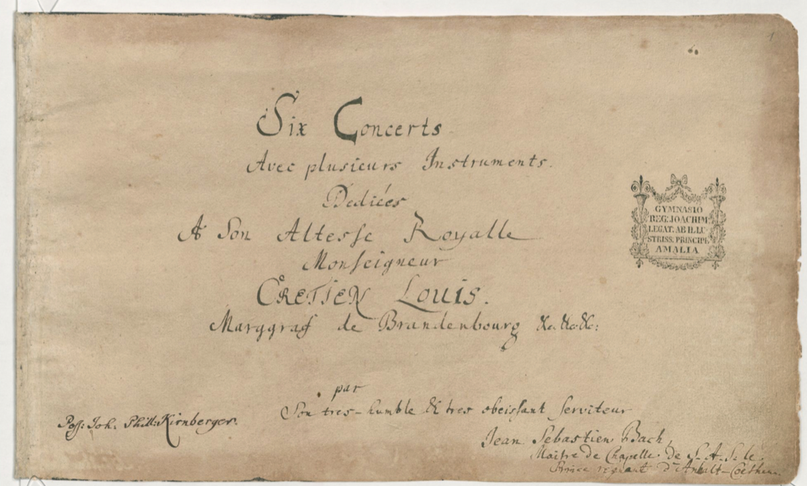

The Brandenburg Concertos (Six Concerts avec plusieurs instruments)
Occasion — Assembled and dedicated to Margrave Christian Ludwig of Brandenburg
Dating — Dedication score dated 24 March 1721; the six works were composed and revised across the Weimar–Cöthen years, some from earlier material.
Recommended recording — John Eliot Gardiner, English Baroque Soloists, Brandenburg Concertos (SDG) · Recordings Shelf
Score — IMSLP (free score)

What it is. Six concertos, each for a different — and in several cases unprecedented — combination of instruments: the most systematic exploration of what "concerto" could mean that anyone had attempted. Bach took the Italian concerto grosso (a small solo group set against the full ensemble, organized by the ritornello principle — a recurring orchestral refrain framing solo episodes, a form he had absorbed from Vivaldi in Weimar) and pushed every variable: who solos, who accompanies, and whether the distinction even holds.
Listen for. The set works as a designed survey. No. 1 is the most orchestral and courtly; No. 2 balances four wildly unequal soloists; No. 3 abolishes soloists entirely (nine equal strings); No. 4 hides a violin concerto inside a chamber texture; No. 5 lets the harpsichord stage a coup; No. 6 removes the violins altogether and lets the ensemble's dark lower half speak. Heard in order, they ask a single question six ways: what is the relationship between the one and the many? — which is also, not coincidentally, the core question of counterpoint.
Craft. Each individual card details its concerto's design. As a set, note the encyclopedic instinct (see the era essay) and the practicality: these were repertory pieces for the Cöthen Capelle's actual personnel, not abstractions for an unknown patron.
Reception thread. Ignored by their dedicatee, unpublished until 1850 — then, in the twentieth century, the gateway drug of the early-music revival. The first movement of No. 2 opens the Voyager Golden Record: the first music our species chose to send out of the solar system (Arc III).
Wolff, The Learned Musician, ch. 7
Boyd, Bach: The Brandenburg Concertos (Cambridge Music Handbooks)
→ full bibliography & links